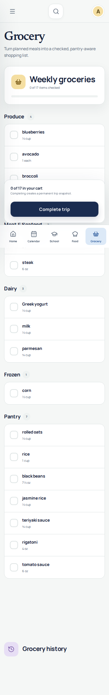

Problem framing
MyHub treats recurring personal workflows as a connected operations problem rather than a collection of unrelated lists. Time, assignments, meals, pantry inventory, and shopping all have constraints, dependencies, and histories that need to remain understandable as records change.
Constraint-based automation
The study planner uses deterministic rules rather than opaque recommendations. It orders incomplete work by deadline and priority, accounts for progress and existing blocks, avoids calendar conflicts and protected times, adds breaks, preserves previously scheduled work, and reports work that cannot fit.
Engineering data integrity
The grocery workflow aggregates only dimensionally compatible mass, volume, and count values. Ambiguous matches stay separate for review, pantry decisions are explicit, and completed shopping trips are retained as immutable history. Stable identifiers, timestamps, provenance, and versioned migrations keep the data traceable.
Reliability and verification
Pure domain rules are separated from browser workflows so scheduling, unit conversion, inventory, and lifecycle behavior can be tested directly. During this review, formatting, linting, strict type checking, unit tests, and the production build all passed, followed by all 123 Playwright scenarios across desktop, tablet, mobile, and accessibility coverage.
Privacy-aware architecture
Core records remain in browser storage by default. External imports pass through explicit review boundaries, credentials are separated from normal application backups, and optional synchronization is designed around client-side encryption. Private supporting infrastructure and personal data are intentionally not linked or shown here.
Mobile inventory workflow
